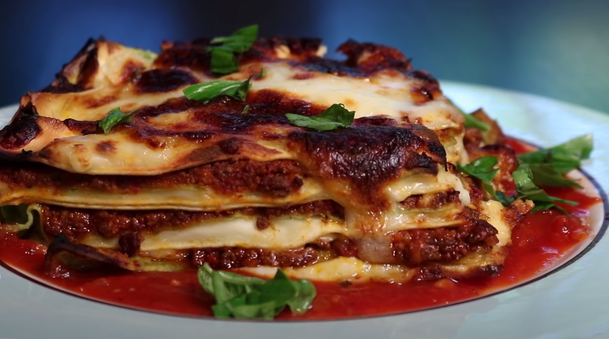

Adam Ragusea's Lasanga
Adam Ragusea is an American YouTuber who creates videos about food recipes, food science, and culinary culture. Until 2020, Ragusea was a professor of journalism at Mercer University. He has since gone on to create many food recipes on his self-titled youtube channel, mostly focusing on home-cook style dishes, as well as the occasional food science video that coincides with whatever he decides to film in the same week.
This is a lasagna recipe, a baked Italian pasta dish
Ingredients:
For the pasta:
- 4 ups all-purpose flour
- 7 eggs
- 8 oz spinach
- salt
For the cheese sauce:
- 1 stick of butter
- 3/4-1 cup flour
- 1 whole head of garlic
- half-gallon of milk
- 7 oz grated pecorino cheese
For topping:
- 1 lb mozzarella cheese, grated
- fresh basil
For the tomato sauce:
- olive oil
- a few cloves of garlic
- 1/2 an onion or a few shallots
- 2 tablespoons tomato paste
- 2 28-oz cans crushed tomatoes
- glug of white wine
- pepper
- salt
Procedure:
DAY ONE
- Make the bolognese, full video and recipe: https://youtu.be/V5WR-K0zJYs
That recipe makes about twice as much sauce as is needed for the lasagna. When it's done, cool it down and put the whole batch in the fridge. Whatever you don't use in the lasagna, you can freeze later.
DAY TWO
- Make the pasta, make the cheese sauce, assemble and pre-bake the lasagna
- In boiling water, cook the spinach for about two minutes or until just wilted. Remove it to a bowl of ice water to stop the cooking and set the green color.
- In a food processor, mix four eggs, two cups of flour and a teaspoon of salt until it comes together into a single dough ball. Remove and wrap in plastic wrap.
- Squeeze as much water as possible out of the spinach. Mix it in the food processor with three eggs, a teaspoon of salt and two cups of flour until a single ball forms. Remove and wrap in plastic wrap.
- Chill both dough balls in the fridge while you make the cheese sauce. Take the bolognese out of the fridge to let it warm up a bit.
- Start the cheese sauce by adding a stick of butter to a large pan, turn on medium heat and let it melt. While it's melting, peel and chop a whole head of garlic. Whisk just enough flour into the butter to make a thick, smooth roux (no more than a cup), then add the garlic. Whisk in the milk, little by little, until smooth.
- Remove the sauce from the heat and let it come off the boil. Grate in all of the pecorino cheese and stir until reasonably smooth. Taste for seasoning, and add salt until it tastes a little too salty.
- With a standard, 6-inch-wide pasta roller, roll out the yellow dough ball on the widest setting. Dust it with flour, fold it back up again, and roll it through again. Repeat the process until it rolls out smooth. Reduce the thickness by one or two notches, then roll it through again. Repeat until you've run it through on the second-to-thinnest setting.
- Cut the pasta sheets so they are 1-2 inches shorter than the pan in which you plan to bake the lasagna (they will expand when boiled). I recommend a disposable 11x19 inch aluminum baking pan, available in most U.S. supermarkets. Cut each sheet up the middle, lengthwise, to make two long ribbons.
- Boil the ribbons in a large pot of salted water until they puff up and float aggressively, about two minutes. Remove them to a large bowl of ice water to stop the cooking process.
- Clear a table, and cover it with clean kitchen towels. Lay out each ribbon of pasta onto the towels and wipe their top-sides with another towel to get them all reasonably dry.
- Repeat the entire process with the green pasta dough.
- Rub the baking dish with olive oil, lay in the first layer of pasta, followed by a thin layer of one of the sauces. Alternate the sauces and the two pasta colors until you run out of pasta to make additional layers. (I get seven layers.) On the final layer, just dab little blobs of both sauces across the top.
- Bake at 400 F for 20 minutes. Cool, cover, then refrigerate overnight.
DAY THREE
- Make tomato sauce, assemble the final dish, eat (finally)
- To make the tomato sauce, peel and chop the garlic and onion/shallots. Fry in olive oil until just soft. Put in the tomato paste and fry a bit more, then dump in the crushed tomatoes and a splash of wine. Simmer for a half hour, stirring frequently. Add salt and pepper to taste.
- Roughly grate the pound of mozzarella.
- Take the lasagna out of the fridge and cut it into 12-18 slices, depending on the desired portion size. Oil three baking sheets, and lift the slices onto the sheets, keeping them as far apart from each other as possible. Top each slice with mozzarella.
- Bake at 400 F for 20 minutes (ideally on convection setting). If the cheese is not brown enough by the end, finish each pan under the broiler.
- Coat plates with a thin layer of tomato sauce, place the slices onto the the sauce, garnish with fresh basil.